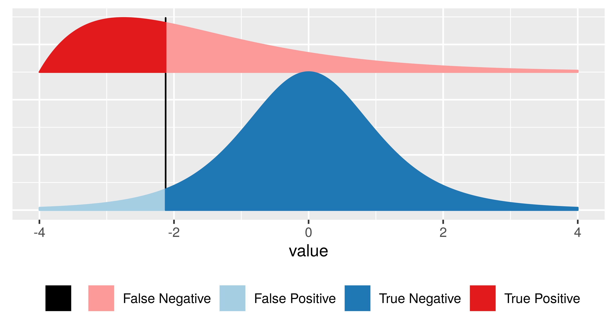

load("../data/e100.RData")
barplot(e100, ylim = c(0, 7), width = 0.7, xlim = c(-0.5, 100.5),
names.arg = seq(along = e100), col = "darkolivegreen")5 Distributions to Hypothesis Tests
5.1 Calculating the chance of an event
When testing certain pharmaceutical compounds, it is important to detect proteins that provoke an allergic reaction. The molecular sites that are responsible for such reactions are called epitopes.
Epitope: A specific portion of a macromolecular antigen to which an antibody binds. In the case of a protein antigen recognized by a T-cell, the epitope or determinant is the peptide portion or site that binds to a Major Histocompatibility Complex (MHC) molecule for recognition by the T cell receptor (TCR).
Enzyme-Linked ImmunoSorbent Assays (ELISA) are used to detect specific epitopes at different positions along a protein. Suppose the following facts hold for an ELISA array we are using:
- The baseline noise level per position, or more precisely the false positive rate, is 1%. This is the probability of declaring a hit – we think we have an epitope – when there is none. We write this \(P(declare epitope|no epitope)\)
- The protein is tested at 100 different positions, supposed to be independent.
- We are going to examine a collection of 50 patient samples.
The data for one patient’s assay look like this:
[1] 0 0 0 0 0 0 0 0 0 0 0 0 0 0 0 0 0 0 0 0 0 1 0 0 0 0 0 0 0 0 0 0 0 0 0 0 0
[38] 0 0 0 0 0 0 0 0 0 0 0 0 0 0 0 0 0 0 0 0 0 0 0 0 0 0 0 0 0 0 0 0 0 0 0 0 0
[75] 0 0 0 0 0 0 0 0 0 0 0 0 0 0 0 0 0 0 0 0 0 0 0 0 0 0where the 1 signifies a hit (and thus the potential for an allergic reaction), and the zeros signify no reaction at that position.
We’re going to study the data for all 50 patients tallied at each of the 100 positions. If there are no allergic reactions, the false positive rate means that for one patient, each individual position has a probability of 1 in 100 of being a 1. So, after tallying 50 patients, we expect at any given position the sum of the 50 observed \((0,1)\) variables to have a Poisson distribution with parameter \(0.5\).
The spike is striking. What are the chances of seeing a value as large as 7, if no epitope is present? If we look for the probability of seeing a number as big as 7 (or larger) when considering one \(Poisson(0.5)\) random variable, the answer can be calculated in closed form as
\[
P(X \ge 7) = \sum\limits_{k=7}^{\infty}P(X=k)
\] This is, of course, the same as \(1-P(X \le 6)\). The probability is the so-called cumulative distribution function at 6, and R has the function ppois for computing it, which we can use in either of the following two ways:
1 - ppois(6, 0.5)[1] 1.00238e-06ppois(6, 0.5, lower.tail = FALSE)[1] 1.00238e-06You can use the command ?ppois to see the argument definitions for the function.
We denote this number, our chance of seeing such an extreme result, as \(\epsilon\). However, in this case it would be the incorrect calculation.
Instead of asking what the chances are of seeing a Poisson(0.5) as large as 7, we need to instead ask, what are the chances that the maximum of 100 Poisson(0.5) trials is as large as 7? We order the data values \(x_1, x_2, ... , x_{100}\) and rename them \(x_{(1)}, x_{(2)}, ... , x_{(100)}\), so that denotes \(x_{(1)}\) the smallest and \(x_{(100)}\) the largest of the counts over the 100 positions. Together, are called the rank statistic of this sample of 100 values.
The maximum value being as large as 7 is the complementary event of having all 100 counts be smaller than or equal to 6. Two complementary events have probabilities that sum to 1. Because the positions are supposed to be independent, we can now do the computation:
\[ P(x_{(100)} \ge 7) = \prod\limits_{i=1}^{100}P(x_i \le 6) = (P(x_i \le 6))^{100} \] which, using our notation, is \((1-\epsilon)^{100}\) and is approximately \(10^{-4}\). This is a very small chance, so we would determine it is most likely that we did detect real epitopes.
5.2 Computing probabilities with simulations
In the case we just saw, the theoretical probability calculation was quite simple and we could figure out the result by an explicit calculation. In practice, things tend to be more complicated, and we are better to compute our probabilities using the Monte Carlo method: a computer simulation based on our generative model that finds the probabilities of the events we’re interested in. Below, we generate 100,000 instances of picking the maximum from 100 Poisson distributed numbers.
maxes = replicate(100000, {
max(rpois(100, 0.5))
})
table(maxes)maxes
1 2 3 4 5 6 7 8
6 23367 60625 14298 1566 129 7 2 So we can approximate the probability of seeing a \(7\) as:
mean( maxes >= 7 )[1] 9e-05We arrive at a similarly small number, and in both cases would determine that there are real epitopes in the dataset.
5.3 An example: coin tossing
Let’s look a simpler example: flipping a coin to see if it is fair. We flip the coin 100 times and each time record whether it came up heads or tails. So, we have a record that could look something like HHTTHTHTT...
Let’s simulate the experiment in R, using a biased coin:
set.seed(0xdada)
numFlips = 100
probHead = 0.6
# Sample is a function in base R which let's us take a random sample from a vector, with or without replacement.
# This line is sampling numFlips times from the vector ['H','T'] with replacement, with the probabilities for
# each item in the vector being defined in the prob argument as [probHead, 1-probHead]
coinFlips = sample(c("H", "T"), size = numFlips,
replace = TRUE, prob = c(probHead, 1 - probHead))
# Thus, coinFlips is a character vector of a random sequence of 'T' and 'H'.
head(coinFlips)[1] "T" "T" "H" "T" "H" "H"Now, if the coin were fair, we would expect half of the time to get heads. Let’s see.
table(coinFlips)coinFlips
H T
59 41 That is different from 50/50. However, does the data deviates strong enough to conclude that this coin isn’t fair? We know that the total number of heads seen in 100 coin tosses for a fair coin follows \(B(100, 0.5)\), making it a suitable test statistic.
To decide, let’s look at the sampling distribution of our test statistic – the total number of heads seen in 100 coin tosses – for a fair coin. As we learned, we can do this with the binomial distribution. Let’s plot a fair coin and mark our observation with a blue line:
library("dplyr")Warning: package 'dplyr' was built under R version 4.2.2
Attaching package: 'dplyr'The following objects are masked from 'package:stats':
filter, lagThe following objects are masked from 'package:base':
intersect, setdiff, setequal, unionlibrary("ggplot2")Warning: package 'ggplot2' was built under R version 4.2.2# This line sets k as the vector [0, 1, 2,...,numFlips]
k <- 0:numFlips
# Recall that binary variables (TRUE and FALSE) are interpreted as 1 and 0, so we can use this operation
# to count the number of heads in coinFlips. We practice these kinds of operations in session 3.
numHeads <- sum(coinFlips == "H")
# We use dbinom here to get the probability mass at every integer from 1-numFlips so that we can plot the distribution.
p <- dbinom(k, size = numFlips, prob = 0.5)
# We then convert it into a dataframe for easier plotting.
binomDensity <- data.frame(k = k, p = p)
head(binomDensity) k p
1 0 7.888609e-31
2 1 7.888609e-29
3 2 3.904861e-27
4 3 1.275588e-25
5 4 3.093301e-24
6 5 5.939138e-23# Here, we are plotting the binomial distribution, with a vertical line representing
# the number of heads we actually observed. We will learn how to create plots in session 4.
# Thus, to complete our test we simply need to identify whether or not the blue line
# is in our rejection region.
ggplot(binomDensity) +
geom_bar(aes(x = k, y = p), stat = "identity") +
geom_vline(xintercept = numHeads, col = "blue")How do we quantify whether the observed value is among those values that we are likely to see from a fair coin, or whether its deviation from the expected value is already large enough for us to conclude with enough confidence that the coin is biased?
We divide the set of all possible \(k(0-100)\) in two complementary subsets, the rejection region and the region of no rejection. We want to make the rejection region as large as possible while keeping their total probability, assuming the null hypothesis, below some threshold \(\alpha\)(say, 0.05).
alpha <- 0.05
# We get the density of our plot in sorted order, meaning that we'll see binomDensity
# jump back and forth between the distribution's tails as p increases.
binomDensity <- binomDensity[order(p),]
# We then manually calculate our rejection region by finding where the cumulative sum in the distribution
# is less than or equal to our chosen alpha level.
binomDensity$reject <- cumsum(binomDensity$p) <= alpha
head(binomDensity) k p reject
1 0 7.888609e-31 TRUE
101 100 7.888609e-31 TRUE
2 1 7.888609e-29 TRUE
100 99 7.888609e-29 TRUE
3 2 3.904861e-27 TRUE
99 98 3.904861e-27 TRUE# Now we recreate the same plot as before, but adding red borders around the parts of our distribution
# in the rejection region.
ggplot(binomDensity) +
geom_bar(aes(x = k, y = p, col = reject), stat = "identity") +
scale_colour_manual(
values = c(`TRUE` = "red", `FALSE` = "darkgrey")) +
geom_vline(xintercept = numHeads, col = "blue") +
theme(legend.position = "none")We sorted the \(p\)-values from lowest to highest (order), and added a column reject by computing the cumulative sum (cumsum) of the \(p\)-values and thresholding it against alpha.
The logical column reject therefore marks with TRUE a set of \(k\)s whose total probability is less than \(\alpha\).
The rejection region is marked in red, containing both very large and very small values of \(k\), which can be considered unlikely under the null hypothesis.
R provides not only functions for the densities (e.g., dbinom) but also for the cumulative distribution functions (pbinom). Those are more precise and faster than cumsum over the probabilities.
The (cumulative) distribution function is defined as the probability that a random variable \(X\) will take a value less than or equal to \(x\).
\[F(x) = P(X \le x)\]
We have just gone through the steps of a binomial test. This is a frequently used test and therefore available in R as a single function.
We have just gone through the steps of a binomial test. In fact, this is such a frequent activity in R that it has been wrapped into a single function, and we can compare its output to our results.
binom.test(x = numHeads, n = numFlips, p = 0.5)
Exact binomial test
data: numHeads and numFlips
number of successes = 59, number of trials = 100, p-value = 0.08863
alternative hypothesis: true probability of success is not equal to 0.5
95 percent confidence interval:
0.4871442 0.6873800
sample estimates:
probability of success
0.59 5.4 Hypothesis Tests
We can summarize what we just did with a series of steps:
- Decide on the effect that you are interested in, design a suitable experiment or study, pick a data summary function and test statistic.
- Set up a null hypothesis, which is a simple, computationally tractable model of reality that lets you compute the null distribution, i.e., the possible outcomes of the test statistic and their probabilities under the assumption that the null hypothesis is true.
- Decide on the rejection region, i.e., a subset of possible outcomes whose total probability is small.
- Do the experiment and collect the data; compute the test statistic.
- Make a decision: reject the null hypothesis if the test statistic is in the rejection region.
5.5 Types of Error

Having set out the mechanics of testing, we can assess how well we are doing. The following table, called a confusion matrix, compares reality (whether or not the null hypothesis is in fact true) with our decision whether or not to reject the null hypothesis after we have seen the data.
| Test vs reality | Null is true | Null is false |
|---|---|---|
| Reject null | Type I error (false positive) | True postitive |
| Do not reject null | True negative | Type II error (false negative) |
It is always possible to reduce one of the two error types at the cost of increasing the other one. The real challenge is to find an acceptable trade-off between both of them. We can always decrease the false positive rate (FPR) by shifting the threshold to the right. We can become more “conservative”. But this happens at the price of higher false negative rate (FNR). Analogously, we can decrease the FNR by shifting the threshold to the left. But then again, this happens at the price of higher FPR. T he FPR is the same as the probability \(\alpha\) that we mentioned above. \(1-\alpha\) is also called the specificity of a test. The FNR is sometimes also called \(\beta\), and \(1-\beta\) the power, sensitivity or true positive rate of a test. The power of a test can be understood as the likelihood of it “catching” a true positive, or correctly rejecting the null hypothesis.
Generally, there are three factors that can affect statistical power:
- Sample size: Larger samples provide greater statistical power
- Effect size: A given design will always have greater power to find a large effect than a small effect (because finding large effects is easier)
- Type I error rate: There is a relationship between Type I error and power such that (all else being equal) decreasing Type I error will also decrease power.
In a future session, we will also see how hypothesis tests can be seen as types of linear models.
The materials in this lesson have been adapted from: - Statistical Thinking for the 21st Century by Russell A. Poldrack. This work is distributed under the terms of the Attribution-NonCommercial 4.0 International (CC BY-NC 4.0), which permits unrestricted use, distribution, and reproduction in any medium, provided the original author and source are credited and the material is used for noncommercial purposes. - Modern Statistics for Modern Biology by Susan Holmes and Wolfgang Huber. This work is distributed under the terms of the Attribution-NonCommercial-ShareAlike 2.0 Generic (CC BY-NC-SA 2.0), which permits unrestricted use, distribution, and reproduction in any medium, provided the original author and source are credited, the material is used for noncommercial purposes, and the same license is used for any derivative material.